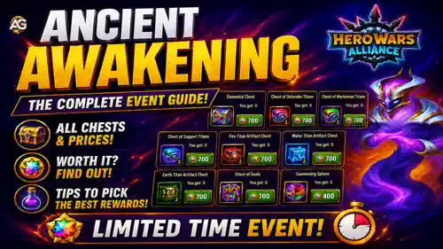
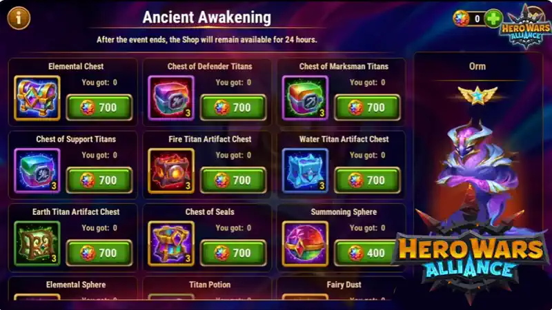

The Ancient Awakening event is the main four-day window to unlock and build Orm in Hero Wars Alliance. If you want Orm in your Titan roster, treat these four days seriously: log in every day, save key resources before the event starts, and spend your event currency with a clear plan.
Orm is an Elarite and Water support Titan. He is strong in Dungeon teams with Water Titans and also has real PVP value, especially when protected by healing and defensive Titans from Water or Light formations. His skill, Devastating Link, stores 50% of the damage taken by allies for 8 seconds and then hits the enemy in the center when the link ends.

Orm is not just another damage Titan. He is a back-line support who rewards teams that can survive heavy pressure. That makes him excellent with Water Titans because Hyperion heals, Tydus supports with summons and healing, Mairi reduces enemy attack, Nova controls enemies, and Sigurd can absorb damage with immunity.
In PVP, Orm is especially interesting against teams that attack the full formation. The more damage your allies take during Devastating Link without dying, the more dangerous Orm's final hit becomes. In Dungeon, that same idea helps Water teams survive longer fights and punish enemies after absorbing pressure.
For the complete Titan breakdown, read the full Orm Titan Guide here.
The first mission group is the direct Ancient Awakening event path. Focus on daily login, resource spending, Energy, and Titan Brawl battles with Orm.
| Mission | What to Do | Rewards and Tips |
|---|---|---|
| Daily Login | Log in to the game during the event. | Do this every day. Missing a login during a four-day event hurts your total rewards. |
| Generous Souls | Earn or spend VIP Points, usually through purchases. | Complete it daily if you plan to spend. More VIP Points means more event progress and rewards. |
| Value Exchange | Spend Emeralds during the event. | Extra tips: You can buy Emeralds from Hub Shop it has the best deals and also you can earn guild points that can help your guild mates, and don't forget to use the ALEXANDREGAMES code it helps me a lot and there is no extra cost to you. Rewards include event shop coins, Season Points, and Titan reward boxes. Spend only where it also helps your account. |
| Energy Evolution | Spend Energy. This task can typically be completed repeatedly during the event. | Save your Energy Bottles in advance to maximize your Event Coin income. Extra tips: For optimal value, use Emeralds to purchase Energy each day. The most efficient strategy is to buy Energy up to the 200 Emeralds for 120 Energy tier, as it offers the best return on investment and is generally the recommended stopping point. |
| The Call of Darkness | Win battles in the Titan Brawl event using Orm. | Use this to test Orm with Water Titans and healing-focused lineups. |
This mission group focuses on Titan weapon artifact resources, guild activity, Valkyrie missions, Titanite, and Summoning Spheres. This is where preparation really pays off.
| Mission | What to Do | Rewards and Tips |
|---|---|---|
| Daily Login | Log in daily. | Gives Titan weapon artifact resources. Collect it every day of the event. |
| Generous Souls | Gain VIP Points. | Useful for players who are already planning purchases during the event. |
| Fellow in Arms | Earn 2,700 Guild Activity Points per day. | Rewards event shop coins and Titan weapon artifact resources. Plan your activity before reset. |
| Valkyrie's Artifacts | Complete Valkyrie missions. | Rewards event coins and weapon artifacts. Tip: on the day before the event, wait to claim Valkyrie missions until the event starts. |
| Titanic Contribution | Collect up to 800 Titanite during the event period. | Rewards event coins and Titan weapon artifacts. Strong Dungeon performance matters here. Extra tips: You can buy Titanite from the in-game VIP shop, buying 75 Titanite daily for 300 emeralds if needed. |
| Power Unleashed | Open Summoning Spheres in the Summoning Circle. | This can be completed multiple times. Save Summoning Spheres before the event. |
| Secrets of the Sun | Complete missions from Mission 3. | Rewards event coins, Titan weapon artifacts, Season Points, and Relic Shards. |
The third mission group is about daily consistency: login, Tower chests, Elemental Spheres, Great Arena fights, Hydra activity, and progress from Mission 2.
| Mission | What to Do | Rewards and Tips |
|---|---|---|
| Login | Log in on all 4 days of the event. | Rewards Titan Seal resources. This is the easiest mission, but also the easiest to forget. |
| Generous Souls | Gain VIP Points. | Extra progress for spenders during the event. |
| The Way Up | Open 100 Tower chests during the event. | Rewards event coins and Titan Seal resources. Save Tower activity for the event day if possible. |
| Open Elemental Spheres | Open Elemental Spheres. | This mission can be repeated. Tip: save Elemental Spheres for the event. |
| Successful Fighter | Fight in the Grand Arena during the event. | Rewards event coins and Titan Seal resources. You usually only need to fight, so do not skip attempts. |
| Hydra Hunter | Defeat any Hydra or use Horns of Summoning to help the Fairies, up to 12 times. | Rewards event coins and Titan Seal resources. Coordinate with your guild so Hydra attempts are not wasted. |
| The Call of Darkness | Complete missions from Mission 2. | Rewards Titan Seal resources, event shop coins, Relic Shards, and Season Points. |
Focus on Orm-related rewards first, then Titan weapon artifacts, and only then on other resources. The event shop has limited inventory, so prioritize items that directly help you build Orm and your Titan roster.

Orm's first impressions points to two strong Water Titan compositions. The first is Hyperion, Mairi, Tydus, Orm, Nova, using Nova as a front-line energy engine so she can stun enemies quickly. The second is Hyperion, Tydus, Orm, Nova, Sigurd, using Sigurd as a safer tank thanks to his 5-second immunity from his ultimate.
Both teams follow the same plan: keep the team alive, let Orm complete Devastating Link, and punish enemies for dealing damage into your Water formation.
If you play Water Titans, the Ancient Awakening event is one of the best moments to secure Orm and start investing in him. He is useful in Dungeon with Water Titans, strong in PVP when paired with healing and protection, and especially dangerous against teams that cannot finish your allies before Devastating Link ends.
Prioritize daily tasks first, then repeatable resource missions, then Titan Brawl testing. The event only lasts four days, so the best results come from planning before day one instead of trying to catch up at the end.
Did you like our Orm Ancient Awakening Event Guide? Is there something you didn't understand or would like to suggest changes to? We invite you to join our comment section on the Alexandre Games Blog page. Feel free to express your opinion, clarify your doubts, and share your suggestions.
Click the button below to get started: